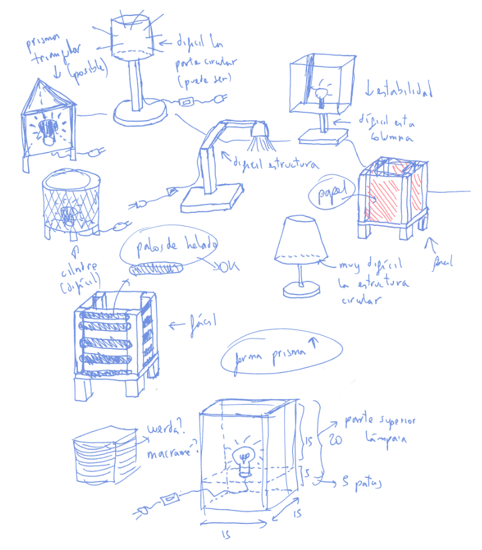

Projecte de Fabricació Digital i Taller Maker · Tecnologia
MEMÒRIA TÈCNICA DE TALLER
Làmpada Intel·ligent Connectada (IoT)
| 👤 Nom i cognoms Alumne/a 1: |
|
| 👤 Nom i cognoms Alumne/a 2: |
|
| 👤 Nom i cognoms Alumne/a 3: |
|
🔍 Què és el procés tecnològic?
El procés tecnològic és la metodologia ordenada que utilitzem per dissenyar i desenvolupar solucions tècniques a problemes o necessitats humanes. Ens ajuda a organitzar el nostre treball de manera sistemàtica, seguint uns passos que garanteixen que el resultat final sigui funcional, segur, eficient i estèticament agradable.
📑 Què és una memòria tècnica?
La memòria tècnica és un document escrit que recull tota la informació relativa a un projecte tecnològic. Serveix com a eina de reflexió, comunicació i registre, ja que permet explicar el projecte a altres persones i revisar les decisions per identificar millores.
Els passos del procés tecnològic:
1
1. Plantejament del problema o necessitat
S'identifica la necessitat que es vol cobrir i es defineix clarament el plec de condicions i requisits tècnics obligatoris.
2
2. Recerca i generació d'idees (Pluja d'idees)
Es fa una recerca inicial, s'exploren possibilitats formals, cada alumne genera idees pròpies a mà alçada i es consensua la solució en equip.
3
3. Disseny de la solució i dibuix tècnic
Se selecciona la idea definitiva i es detalla mitjançant plànols en sistema dièdric (alçat, planta i perfil), models CAD per a làser/3D i esquema elèctric.
4
4. Planificació de la fabricació
Es preveuen les tasques, eines, codi de l'ESP32 i materials necessaris. Es crea un cronograma i full de procés per organitzar el taller.
5
5. Construcció o implementació
Es materialitza el disseny: tall làser de fusta, impressió 3D de suports, connexió del circuit amb ESP32 i relé, i muntatge de la làmpada.
6
6. Prova i avaluació
Es comprova el funcionament del control WiFi des del mòbil, l'estabilitat mecànica i el compliment dels requisits inicials.
7
7. Comunicació
Es presenta el prototip finalitzat, es defensa la solució tècnica i s'avalua el procés i els aprenentatges adquirits.
🔄 Un procés cíclic
El procés tecnològic és cíclic perquè està pensat per millorar contínuament. Cada fase està connectada amb la següent i amb les anteriors: si durant la construcció o prova es detecta un error (per exemple, un relé mal commutat o una peça 3D que no encaixa), es pot tornar a la fase de disseny per reajustar-ho.
🎯 Objectiu del Projecte: Disseny i Construcció d'una Làmpada Intel·ligent IoT
L'objectiu d'aquest projecte és dissenyar, construir i programar una làmpada de sobretaula connectada que integri fabricació digital Maker de taller i tecnologia IoT (Internet de les Coses) per permetre el control sense fils de la il·luminació. La làmpada ha de ser plenament funcional, segura, eficient (LED) i estèticament atractiva.
Plec de Condicions i Requisits Tècnics Obligatoris:
📏
Dimensions i Geometria Límit Màxim
La base no pot superar els 15 × 15 cm i l'alçada màxima serà de 20 cm. L'estructura ha de tenir un centre de gravetat baix per garantir estabilitat mecànica absoluta (no ha de trontollar ni bolcar en prémer l'interruptor).
📶
Control IoT amb ESP32 i Relé Circuit 5V
Microcontrolador ESP32 amb connexió WiFi connectat a un mòdul relé optoacoblat (5V). La làmpada s'ha de poder encendre i apagar en remot des del telèfon mòbil (mitjançant servidor web local o interfície digital).
⚡
Talladora Làser (Fabricació 2D) Fusta / Metacrilat
Cares exteriors, gelosies i panells estructurals fabricats amb la talladora làser (DM/contraplacat de 3 o 4 mm). Es valorarà dissenyar unions mecàniques per ranures o encaixos (finger joints) per garantir fermesa sense dependre només de la cola.
🖨️
Impressora 3D (Peces Volumètriques) Filament PLA/PETG
Disseny i impressió 3D d'elements tècnics funcionals: caixa/xassís de protecció per a l'ESP32 i relé, suports d'ancoratge per al portalàmperes o peus amortidors. Cal preveure ventilació i passos de cable nets.
🏮
Pantalla Difusora Translúcida Confort Lumínic
Font de llum amb bombeta LED (sòcol estàndard E14 o E27). És obligatori cobrir la bombeta amb una pantalla de material translúcid (paper vegetal, tela, polipropilè o metacrilat opal) per difondre la llum i evitar enlluernaments visuals.
🔌
Instal·lació Elèctrica i Seguretat 230V~ Segur
Circuit de potència aïllat amb cable d'alimentació homologat de mínim 1 metre i clavilla d'endoll. Inclou subjecció mecànica anti-estrebades al xassís, regleta aïllada i interruptor físic de tall general de seguretat.
⭐ Criteris de Qualitat Tècnica i Disseny que es Valoraran:
• Originalitat i Creativitat: Disseny diferencial i personalitzat; formes innovadores que s'allunyin d'un cub simple o model estàndard.
• Estabilitat Mecànica: Base sòlida i pes ben compensat; la làmpada no ha de balancejar ni en manipular l'interruptor ni en moure la taula.
• Seguretat del Circuit: Aïllament total de contactes de 230V, cables subjectats i capsa tancada de protecció per a l'electrònica.
• Precisió i Acabats Maker: Encaixos nets sense folgances a la talladora làser i peces 3D ben calibrades sense fils solts.
🧠 Part 1: Diagnosi Inicial Individual — Què sé? Què necessito aprendre?
Abans de començar a dissenyar, cada alumne/a ha d'autoavaluar de manera individual i sincera els seus coneixements previs i allò que li caldrà aprendre en cadascun dels àmbits clau del projecte.
| Àmbit Tècnic del Projecte |
👤 Alumne/a 1 |
👤 Alumne/a 2 |
👤 Alumne/a 3 |
| 1. Electricitat (portalàmperes, bombeta, 230V, endoll i seguretat) |
Ja ho sé fer
He d'aprendre'n
|
Ja ho sé fer
He d'aprendre'n
|
Ja ho sé fer
He d'aprendre'n
|
| 2. Electrònica (ESP32, mòdul relé 5V, connexions de control i pins GPIO) |
Ja ho sé fer
He d'aprendre'n
|
Ja ho sé fer
He d'aprendre'n
|
Ja ho sé fer
He d'aprendre'n
|
| 3. Programació i Control Mòbil (Codi ESP32, xarxa WiFi i interfície web/mòbil) |
Ja ho sé fer
He d'aprendre'n
|
Ja ho sé fer
He d'aprendre'n
|
Ja ho sé fer
He d'aprendre'n
|
| 4. Disseny i Impressió 3D (Modelatge CAD per a suports, capsa i laminat 3D) |
Ja ho sé fer
He d'aprendre'n
|
Ja ho sé fer
He d'aprendre'n
|
Ja ho sé fer
He d'aprendre'n
|
| 5. Disseny 2D i Tall Làser (Dibuix vectorial, ranures d'encaix i fusta/metacrilat) |
Ja ho sé fer
He d'aprendre'n
|
Ja ho sé fer
He d'aprendre'n
|
Ja ho sé fer
He d'aprendre'n
|
| 6. Taller Mecànic i Muntatge (Estabilitat, encolat, cargols i acabat) |
Ja ho sé fer
He d'aprendre'n
|
Ja ho sé fer
He d'aprendre'n
|
Ja ho sé fer
He d'aprendre'n
|
🤝 Part 2: Posada en Comú d'Equip i Distribució de Responsabilitats
Poseu en comú les vostres autoavaluacions individuals de la taula superior. Dialogueu per identificar quins talents i habilitats particulars aporta cada membre i establiu els reptes d'aprenentatge col·lectius:
1. Punts forts i coneixements que aportem cadascun a l'equip:
👤 Alumne/a 1:
Àmbits on puc ajudar més:
👤 Alumne/a 2:
Àmbits on puc ajudar més:
👤 Alumne/a 3:
Àmbits on puc ajudar més:
2. Què necessitem aprendre i investigar junts com a equip:
🔧 Aspectes tècnics clau a resoldre junts (circuit 230V, WiFi ESP32, toleràncies):
📚 Documentació a consultar i proves prèvies abans de fabricar:
3. Assignació formal de rols a l'equip:
🖨️ Rol 1: Disseny 3D i Materials
Assignat a:
Lidera el modelat CAD de la caixa i suports, laminat i impressió 3D.
⚡ Rol 2: Tall Làser i Estructura
Assignat a:
Lidera el disseny vectorial 2D, ranures d'encaix i tall/gravat làser.
📶 Rol 3: Electrònica i Codi IoT
Assignat a:
Lidera el circuit ESP32/relé, programació WiFi i enllaç amb el mòbil.
🛡️ Responsabilitats conjuntes obligatòries: Muntatge elèctric del portalàmperes i bombeta, subjecció segura del cable de 230V, estabilitat de la base i compliment estricte de les normes de seguretat del taller.
💡 Metodologia Maker: Com s'investiga abans de dissenyar una làmpada?
Un bon disseny tecnològic no comença mai des de zero. Abans d'agafar el llapis, cal observar com grans dissenyadors industrials, marques de referència i la comunitat Maker han resolt els reptes que tenim entre mans: la difusió agradable de la llum sense enlluernar, l'estabilitat mecànica de la base, els encaixos nets de fusta làser (finger joints) i l'allotjament segur del circuit de 230V i l'ESP32. Perquè la recerca sigui rica, rigorosa i completa, tots els membres de l'equip heu d'investigar els 3 àmbits d'inspiració següents:
🏛️
Àmbit 1: Disseny Industrial i Clàssics
Museus i Mestres de la Il·luminació
Investigueu la història del disseny, les formes geomètriques pures, la calidesa de materials i la difusió de llum indirecta:
- Museu del Disseny de Barcelona (DHub): Col·lecció històrica de lluminàries de disseny català.
- Vitra Design Museum & MoMA: Clàssics mundials de la il·luminació funcional i mestres de la Bauhaus.
- Autors clau a estudiar:
• Miguel Milá (làmpades Cesta o TMD, fusta noble, formes arrodonides i nansa).
• Poul Henningsen (sistema PH d'anells concèntrics per a llum indirecta sense enlluernament).
• Achille Castiglioni (làmpades Taccia o Snoopy, reflexió i formes netes).
• Wilhelm Wagenfeld (Bauhaus WG24, funcionalitat geomètrica).
🌐 museudeldisseny.barcelona.cat · vitra.com · moma.org
🛋️
Àmbit 2: Comercial i Tendències
Mercat Actual i Interiorisme
Investigueu tendències contemporànies, pantalles translúcides, estil nòrdic/japandi i peces fàcilment desmuntables:
- IKEA / Mobiliari Escandinau: Làmpades de sobretaula, pantalles de tela/polipropilè, muntatge per peces planes fàcils d'acoblar i accessibilitat.
- Pinterest & Behance: Cerques recomanades:
• "minimalist wooden desk lamp"
• "japandi lighting" (minimalisme càlid zen)
• "geometric plywood light"
• "origami paper lamp shade"
- Revistes de disseny: Dezeen (secció dezeen.com/design/lighting) i Designboom (tendències en calidesa, fustes naturals i confort lumínic domèstic).
🌐 ikea.com · pinterest.com · behance.net · dezeen.com
⚙️
Àmbit 3: Comunitat Maker i IoT
Fabricació Digital (3D + Làser)
Analitzeu solucions reals de fabricació digital, unions mecàniques i allotjament de components electrònics:
- Printables & Thingiverse: Peces 3D: suports per al portalàmperes E14/E27, capses protectores per a l'ESP32 i relé, peus de suport.
- Generadors d'encaixos làser:
• MakerCase (makercase.com) i Boxes.py (encaixos tipus finger joints i t-slots).
• ObrirVectors (gelosies paramètriques i fusta flexible / living hinges per làser).
- Instructables & Hackster.io: Projectes DIY de làmpades WiFi amb ESP32, relé optoacoblat, commutació i circuit 230V segur.
🌐 printables.com · makercase.com · instructables.com
📌 Pautes per a la recerca individual de cada alumne/a (Pàgines 6, 7 i 8):
• Una fitxa de recerca per alumne/a: Cadascú disposa d'un full sencer de treball personal (Pàg. 6 per a l'Alumne 1, Pàg. 7 per a l'Alumne 2 i Pàg. 8 per a l'Alumne 3).
• Tots investigueu els 3 àmbits: Cada alumne/a ha de seleccionar 3 models concrets (un de cada àmbit): Model 1: Clàssic, Model 2: Comercial i Model 3: Maker. Dibuixeu el seu croquis i analitzeu tant la solució estètica com la tècnica que voleu aprofitar.
• Pas següent (Pàgina 9): Un cop emplenades les fitxes individuals, us reunireu en equip per compartir i contrastar les vostres troballes a la sessió de posada en comú.
Explora els 3 àmbits de referència de la Pàgina 5 i selecciona 3 models concrets (un de cada tipus). Dibuixa el croquis de cadascun i analitza quina solució estètica i tècnica vols aprofitar:
✏️ Croquis Model 1: Clàssic o Museu (Silueta, proporció i difusió)
🏛️ Model 1: Clàssics del Disseny & Museus
Font / Museu / Web:
Nom de la làmpada i dissenyador/any:
🎨 Solució estètica que aprofitem:
⚙️ Solució tècnica que aprofitem:
✏️ Croquis Model 2: Comercial o Tendència (Pantalla i muntatge)
🛋️ Model 2: Disseny Comercial & Tendències
Font / Marca / Botiga:
Nom de la làmpada i marca/col·lecció:
🎨 Solució estètica que aprofitem:
⚙️ Solució tècnica que aprofitem:
✏️ Croquis Model 3: Comunitat Maker (Encaix làser o suport 3D)
🛠️ Model 3: Comunitat Maker & Fabricació Digital
Font / Web / Repositori:
Nom del projecte Maker i dissenyador:
🎨 Solució estètica que aprofitem:
⚙️ Solució tècnica que aprofitem:
💡 Síntesi personal Alumne/a 1: Quina troballa defensaràs davant del grup?
D'aquests 3 models (1 clàssic, 1 comercial i 1 maker), quina és la
solució estètica o tècnica més potent que presentaràs a la posada en comú de la
Pàgina 9?
Explora els 3 àmbits de referència de la Pàgina 5 i selecciona 3 models concrets (un de cada tipus). Dibuixa el croquis de cadascun i analitza quina solució estètica i tècnica vols aprofitar:
✏️ Croquis Model 1: Clàssic o Museu (Silueta, proporció i difusió)
🏛️ Model 1: Clàssics del Disseny & Museus
Font / Museu / Web:
Nom de la làmpada i dissenyador/any:
🎨 Solució estètica que aprofitem:
⚙️ Solució tècnica que aprofitem:
✏️ Croquis Model 2: Comercial o Tendència (Pantalla i muntatge)
🛋️ Model 2: Disseny Comercial & Tendències
Font / Marca / Botiga:
Nom de la làmpada i marca/col·lecció:
🎨 Solució estètica que aprofitem:
⚙️ Solució tècnica que aprofitem:
✏️ Croquis Model 3: Comunitat Maker (Encaix làser o suport 3D)
🛠️ Model 3: Comunitat Maker & Fabricació Digital
Font / Web / Repositori:
Nom del projecte Maker i dissenyador:
🎨 Solució estètica que aprofitem:
⚙️ Solució tècnica que aprofitem:
💡 Síntesi personal Alumne/a 2: Quina troballa defensaràs davant del grup?
D'aquests 3 models (1 clàssic, 1 comercial i 1 maker), quina és la
solució estètica o tècnica més potent que presentaràs a la posada en comú de la
Pàgina 9?
Explora els 3 àmbits de referència de la Pàgina 5 i selecciona 3 models concrets (un de cada tipus). Dibuixa el croquis de cadascun i analitza quina solució estètica i tècnica vols aprofitar:
✏️ Croquis Model 1: Clàssic o Museu (Silueta, proporció i difusió)
🏛️ Model 1: Clàssics del Disseny & Museus
Font / Museu / Web:
Nom de la làmpada i dissenyador/any:
🎨 Solució estètica que aprofitem:
⚙️ Solució tècnica que aprofitem:
✏️ Croquis Model 2: Comercial o Tendència (Pantalla i muntatge)
🛋️ Model 2: Disseny Comercial & Tendències
Font / Marca / Botiga:
Nom de la làmpada i marca/col·lecció:
🎨 Solució estètica que aprofitem:
⚙️ Solució tècnica que aprofitem:
✏️ Croquis Model 3: Comunitat Maker (Encaix làser o suport 3D)
🛠️ Model 3: Comunitat Maker & Fabricació Digital
Font / Web / Repositori:
Nom del projecte Maker i dissenyador:
🎨 Solució estètica que aprofitem:
⚙️ Solució tècnica que aprofitem:
💡 Síntesi personal Alumne/a 3: Quina troballa defensaràs davant del grup?
D'aquests 3 models (1 clàssic, 1 comercial i 1 maker), quina és la
solució estètica o tècnica més potent que presentaràs a la posada en comú de la
Pàgina 9?
🤝 Dinàmica de Posada en Comú: Compartir les troballes de la recerca prèvia
Un cop cada membre ha investigat els 3 àmbits i ha completat la seva fitxa individual (Pàgines 6, 7 i 8), reuniu-vos en equip. Cada alumne/a disposa de 2 minuts per ensenyar els seus 3 croquis i defensar les millors solucions descobertes. Resumiu a continuació les solucions estètiques i tècniques aportades per contrastar idees i construir la identitat del vostre projecte:
👤 Alumne/a 1 · Millors troballes seleccionades dels 3 àmbits
Model preferit presentat:
🎨 Solució Estètica proposada a l'equip:
⚙️ Solució Tècnica proposada a l'equip:
👤 Alumne/a 2 · Millors troballes seleccionades dels 3 àmbits
Model preferit presentat:
🎨 Solució Estètica proposada a l'equip:
⚙️ Solució Tècnica proposada a l'equip:
👤 Alumne/a 3 · Millors troballes seleccionades dels 3 àmbits
Model preferit presentat:
🎨 Solució Estètica proposada a l'equip:
⚙️ Solució Tècnica proposada a l'equip:
🎯 Síntesi de Consens: La "Fórmula" de la Nostra Làmpada
Acord previ abans de començar els esbossos individuals
Després de contrastar les 3 recerques, definiu amb detall la fórmula combinada que guiarà la pluja d'idees i els esbossos individuals de cadascú (Pàgines 11 a 16):
🎨 1. Acord en la Solució Estètica Global (Forma, geometria exterior, pantalla difusora i tipus de llum càlida):
⚙️ 2. Acord en la Solució Tècnica Global (Encaixos de fusta làser finger joints, capsa 3D per a l'ESP32 i seguretat 230V):
⚠️ 3. Requisit tècnic o estètic innegociable de l'equip (Criteri que cap dels 3 esbossos individuals no pot oblidar):
💡 Com començar a generar idees? (Exemple per fer els esbossos)
Un cop feta la recerca prèvia i consensuats els criteris a la pàgina anterior, és el moment de dibuixar les vostres propostes. A continuació, teniu un exemple per fer els esbossos. Fixeu-vos com s'hi exploren diferents formes volumètriques (prismes, cubs, cilindres), materials (palets, corda, fusta) i s'hi anoten qüestions clau com la viabilitat, dimensions i dificultat tècnica.

✏️ Exemple per fer els esbossos: pluja d'idees gràfica amb exploració de formes, cotes preliminars (15x15x20 cm), materials i anotacions de dificultat
📌 Pautes per al treball individual (Pàgines 11 a 16):
• Dos fulls de treball de dibuix per alumne/a:
1️⃣ Full 1 · Pluja d'idees gràfica: Dibuixeu a mà alçada múltiples idees, formes volumètriques (cubs, prismes, cilindres, estructures corbades), provant materials i alternatives ràpides com a l'exemple superior (Pàg. 11 per a l'Alumne 1, Pàg. 13 per a l'Alumne 2 i Pàg. 15 per a l'Alumne 3).
2️⃣ Full 2 · Esbós definitiu individual: Trieu la millor idea de la vostra pluja d'idees i dibuixeu-la amb màxim detall, cotes reals (≤ 15×15 cm base, ≤ 20 cm alçada), pantalla difusora i indicació de components (fusta làser, impressió 3D, ESP32 i relé de 230V) (Pàg. 12 per a l'Alumne 1, Pàg. 14 per a l'Alumne 2 i Pàg. 16 per a l'Alumne 3).
• Pas següent (Pàgina 17): Un cop enllestits els esbossos definitius, fareu la deliberació en equip i la matriu de valoració per triar la millor solució del grup.
Dibuixa en aquest full diversos esbossos ràpids i proves de formes a mà alçada (cilindres, prismes, estructures corbades, panells làser...), inspirant-te en la recerca prèvia i l'exemple de la Pàg. 10. Prova almenys 3 o 4 variacions diferents abans de triar la teva proposta final:
Dibuixa en aquest full la teva proposta de làmpada definitiva (la millor idea seleccionada de la pluja d'idees) amb perspectiva i detalls constructius. Indica cotes reals (≤ 15×15 cm base, ≤ 20 cm alçada) i assenyala les parts en Fusta Làser, Impressió 3D, Pantalla Difusora i l'espai per a l'ESP32 i relé.
Dibuixa en aquest full diversos esbossos ràpids i proves de formes a mà alçada (cilindres, prismes, estructures corbades, panells làser...), inspirant-te en la recerca prèvia i l'exemple de la Pàg. 10. Prova almenys 3 o 4 variacions diferents abans de triar la teva proposta final:
Dibuixa en aquest full la teva proposta de làmpada definitiva (la millor idea seleccionada de la pluja d'idees) amb perspectiva i detalls constructius. Indica cotes reals (≤ 15×15 cm base, ≤ 20 cm alçada) i assenyala les parts en Fusta Làser, Impressió 3D, Pantalla Difusora i l'espai per a l'ESP32 i relé.
Dibuixa en aquest full diversos esbossos ràpids i proves de formes a mà alçada (cilindres, prismes, estructures corbades, panells làser...), inspirant-te en la recerca prèvia i l'exemple de la Pàg. 10. Prova almenys 3 o 4 variacions diferents abans de triar la teva proposta final:
Dibuixa en aquest full la teva proposta de làmpada definitiva (la millor idea seleccionada de la pluja d'idees) amb perspectiva i detalls constructius. Indica cotes reals (≤ 15×15 cm base, ≤ 20 cm alçada) i assenyala les parts en Fusta Làser, Impressió 3D, Pantalla Difusora i l'espai per a l'ESP32 i relé.
💡 Pas 1: Proposta individual a partir de l'esbós definitiu
Després d'haver explorat la recerca, la pluja d'idees i l'esbós definitiu individual (Pàgines 11 a 16), cada alumne/a defensa el seu disseny final davant de l'equip:
👤 Esbós Definitiu Alumne/a 1 (Pàg. 12)
Model / Concepte:
Punts forts de la proposta:
👤 Esbós Definitiu Alumne/a 2 (Pàg. 14)
Model / Concepte:
Punts forts de la proposta:
👤 Esbós Definitiu Alumne/a 3 (Pàg. 16)
Model / Concepte:
Punts forts de la proposta:
⚖️ Pas 2: Matriu de Valoració Tècnica (Puntueu d'1 a 5 punts cada criteri):
Valoreu cada proposta definitiva segons els criteris del Plec de Condicions
| Criteri Tècnic d'Avaluació |
Esbós Definitiu
Alumne/a 1 (Pàg. 12) |
Esbós Definitiu
Alumne/a 2 (Pàg. 14) |
Esbós Definitiu
Alumne/a 3 (Pàg. 16) |
| 1. Originalitat i Creativitat (disseny innovador i diferent d'un cub simple) |
____ / 5 |
____ / 5 |
____ / 5 |
| 2. Estabilitat Estructural (base ferma, centre de gravetat baix, no balanceja) |
____ / 5 |
____ / 5 |
____ / 5 |
| 3. Seguretat del Circuit Elèctric (aïllament 230V, cables subjectats, relé segur) |
____ / 5 |
____ / 5 |
____ / 5 |
| 4. Viabilitat al Taller Maker (aprofitament òptim de tall làser i impressió 3D) |
____ / 5 |
____ / 5 |
____ / 5 |
| 5. Respecte de Cotes Màximes (≤ 15×15 cm base, ≤ 20 cm alçada) |
____ / 5 |
____ / 5 |
____ / 5 |
| 6. Confort Lumínic (pantalla translúcida eficaç que evita l'enlluernament) |
____ / 5 |
____ / 5 |
____ / 5 |
| PUNTUACIÓ TOTAL CONCENSUADA: |
____ / 30 |
____ / 30 |
____ / 30 |
🏛️ Pas 3: Elecció de la Millor Opció entre els 3 (Veredicte Final de l'Equip)
Nom oficial del model de làmpada triat pel grup:
Quina és la millor opció escollida entre els 3 (o com heu combinat els diferents esbossos)?
Justificació d'equip: Per què és la millor opció tècnica (originalitat, estabilitat, seguretat elèctrica i viabilitat)?
Modificacions o millores acordades respecte a l'esbós original per garantir l'èxit de fabricació: